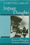
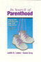
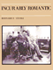
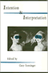

Browse
other Titles:
A B C
D E F
G H I
J K L
M N O
P Q R
S T U
V W X
Y Z |
|
I
Can't Remember
Family Stories of Alzheimer's Disease
Smoller,
Esther Strauss, foreword by Kathleen O’Brien
136 pp • 7x10 • Fall 1997
cloth 978-1-56639-555-7
|

|
"I Hear America Singing"
Folk Music and National Identity
Donaldson, Rachel Clare
234 pp • 6x9 • Fall 2014
paper 978-1-43991-079-5
cloth 978-1-43991-078-8 |
 |
I
Remember Julia
Voices of the Disappeared
Carlson,
Eric Stener
240 pp • 5.5x8.25 • Spring 1996
paper 978-1-56639-437-6
cloth 978-1-56639-430-7
|

|
I Walked with Giants
The Autobiography of Jimmy Heath
Heath, Jimmy and Joseph McLaren
344 pp • 6x9 • Fall 2009
cloth 978-1-4399-0198-4
|
 |
I
Wanna Be Me
Rock Music and the Politics of Identity
Gracyk,
Theodore
304 pp • 6x9 • Fall 2001
paper 978-1-56639-903-6
cloth 978-1-56639-902-9
|
|
Identifying Consumption
Subjects and Objects in Consumer Society
Dunn, Robert G.
248 pp • 5.5x8.25 • Spring 2008
paper 978-1-59213-870-8
cloth 978-1-59213-869-2
|
|
Identity
and Power
Puerto Rican Politics and the Challenge of Ethnicity
Cruz,
Jos� E.
296 pp • 6x9 • Spring 1998
paper 978-1-56639-605-9
cloth 978-1-56639-604-2
|

|
The Identity Dilemma
Social Movements and Collective Identity
edited by McGarry, Aidan and James M. Jasper
238 pp • 6x9 • Spring 2015
paper 978-1-4399-1252-2
cloth 978-1-4399-1251-5 |
 |
Identity
Politics
Lesbian Feminism and the Limits of Community
Phelan,
Shane
256 pp • Fall 1989
paper 978-0-87722-902-5
cloth 978-0-87722-651-2 |
|
Ideology
and Practice in Schooling
edited
by Apple, Michael W. and Lois Weis
286 pp • 6x9 • Spring 1983
paper 978-0-87722-313-9
cloth 978-0-87722-295-8
|
|
Ideology,
Culture and the Process of Schooling
Giroux,
Henry A.
250 pp • Fall 1981
paper 978-0-87722-370-2
cloth 978-0-87722-228-6
|
 |
If
You Tame Me
Understanding Our Connection with Animals
Irvine,
Leslie, foreword by Marc Bekoff
240 pp • 6x9 • Spring 2004
paper 978-1-59213-241-6
cloth 978-1-59213-240-9
|
 |
Illegal Migrations and the Huckleberry Finn Problem
Park, John S.W.
278 pp • 6x9 • Spring 2013
paper 978-1-4399-1047-4
cloth 978-1-4399-1046-7
|

|
Illness or Deviance?
Drug Courts, Drug Treatment, and the Ambiguity of Addiction
Murphy, Jennifer
244 pp • 6x9 • Spring 2015
paper 978-1-4399-1190-7
cloth 978-1-4399-1189-1 |
 |
Images
of Animals
Anthropomorphism and Animal Mind
Crist,
Eileen
256 pp • 6x9 • Fall 1998
paper 978-1-56639-788-9
cloth 978-1-56639-656-1
|
 |
Images
of Appalachian Coalfields
Levy,
Builder, introduction by Helen Matthews Lewis, foreword by Cornell
Capa
144 pp • 8x10 • Spring 1989
cloth 978-0-87722-588-1 |

|
Imagined Liberation
Xenophobia, Citizenship, and Identity in South Africa, Germany, and Canada
Adam, Heribert and Kogila Moodley
246 pp • 6x9 • Spring 2015
paper 978-1-4399-1190-7
cloth 978-1-4399-1189-1
|
 |
Immigrants,
Unions, and the New U.S. Labor Market
Ness,
Immanuel
240 pp • 5.5x8.25 • Spring 2005
paper 978-1-59213-041-2
cloth 978-1-59213-040-5
|
|  |
Impure
Thoughts
Essays on Philosophy, Feminism, and Ethics
Addelson,
Kathryn Pyne
257 pp • 5.5x8.25 • Fall 1990
paper 978-0-87722-960-5
cloth 978-0-87722-753-3 |
 |
In a Queer Voice
Journeys of Resilience from Adolescence to Adulthood
Sadowski, Michael, foreword by Carol Gilligan
210 pp • 6x9 • Fall 2012
paper 978-1-4399-0802-0
cloth 978-1-4399-0801-3 |
 |
In
Griot Time
An American Guitarist in Mali
Eyre,
Banning
280 pp • 6x9 • Spring 2000
paper 978-1-56639-759-9
cloth 978-1-56639-758-2
|
|  |
In
Search of Parenthood
Coping with Infertility and High-Tech Conception
Lasker,
Judith N. and Susan Borg
240 pp • 6x9 • Fall 1994
paper 978-1-56639-259-4
cloth 978-1-56639-258-7 |
 |
In
The Place To Be
Guy Trebay's New York
Trebay,
Guy, photographs by Sylvia Plachy
384 pp • 5.5x8.5 • Fall 1994
paper 978-1-56639-208-2
cloth 978-1-56639-278-5 |
 |
In
the Shadow of War
Memories of a Soldier and Therapist
Student,
Menachem, foreword by Terry A. Kupers
192 pp • Spring 1991
cloth 978-0-87722-789-2 |
|
In
Timber Country
Working People's Stories of Environmental Conflict and Urban Flight
Brown,
Beverly A.
336 pp • 6x9 • Spring 1995
paper 978-1-56639-273-0
cloth 978-1-56639-272-3 |
|
In
Transit
The Transport Workers Union in New York City, 1933-1966
Freeman,
Joshua B.
464 pp • 6x9 • Fall 2001
paper 978-1-56639-922-7
|
 |
In
Washington but Not of It
The Prophetic Politics of Religious Lobbyists
Hofrenning,
Daniel J. B.
256 pp • 5.5x8.25 • Spring 1995
paper 978-1-56639-304-1
cloth 978-1-56639-303-4 |
 |
Incidental Racialization
Performative Assimilation in Law School
Pan, Yung-Yi Diana
220 pp • 6x9 • Spring 2017
paper 978-1-4399-1385-7
cloth 978-1-4399-1384-0
|
|  |
Incurably
Romantic
Stehle,
Bernard F., afterword by Joseph Schneider
256 pp • Spring 1985
cloth 978-0-87722-307-8 |
 |
An
Indian in White America
Monroe,
Mark, edited by Carolyn Reyer, afterword by Kenneth Lincoln
256 pp • 6x9 • Fall 1994
paper 978-1-56639-235-8
cloth 978-1-56639-234-1 |
 |
Individual
Voices, Collective Visions
Fifty Years of Women in Sociology
edited
by Goetting, Ann and Sarah Fenstermaker
376 pp • 6x9 • Fall 1994
paper 978-1-56639-251-8
cloth 978-1-56639-250-1 |
 |
Inheritance
Law and the Evolving Family
Brashier,
Ralph C.
272 pp • 6x9 • Fall 2003
paper 978-1-59213-222-5
cloth 978-1-59213-221-8
|
 |
Inhuman
Relations
Quality Circles and Anti-Unionism in American Industry
Grenier,
Guillermo J.
256 pp • Fall 1987
paper 978-0-87722-632-1
cloth 978-0-87722-502-7 |
 |
Inner Speech and the Dialogical Self
Wiley, Norbert
218 pp • 6x9 • Spring 2016
paper 978-1-4399-1328-4
cloth 978-1-4399-1327-7
|
 |
Insane
Therapy
Portrait of a Psychotherapy Cult
Ayella,
Marybeth F.
213 pp • 6x9 • Spring 1998
paper 978-1-56639-601-1
cloth 978-1-56639-600-4
|
|
Inside
Agitators
Australian Femocrats and the State
Eisenstein,
Hester
312 pp • 6x9 • Fall 1995
paper 1 978-1-56639-388-1
cloth 978-1-56639-387-4
|
 |
Integrating
the City of Medicine
Blacks in Philadelphia Health Care, 1910-1965
McBride,
David
320 pp • Fall 1988
cloth 978-0-87722-546-1 |
|
Integrity
A Philosophical Inquiry
Halfon,
Mark S.
192 pp • Spring 1989
cloth 978-0-87722-605-5 |
|  |
Intention
and Interpretation
edited
by Iseminger, Gary
304 pp • 6x9 • Fall 1992
paper 978-1-56639-346-1
cloth 978-0-87722-971-1
|

|
Interfaith Dialogue at the Grass Roots
Preface by Leonard Swidler
Mays, Rebecca Kratz
142 pp • 6x9 • Spring 2009
paper 978-0-931214-11-0 |

|
The International Monetary Fund and Latin America
The Argentine Puzzle in Context
Kedar, Claudia
264 pp • 6x9 • Fall 2012
cloth 978-1-4399-0909-6
|
 |
Interpreting
Wittgenstein
A Cloud of Philosophy, a Drop of Grammar
Suter,
Ronald
320 pp • Fall 1989
paper 978-0-87722-904-9
cloth 978-0-87722-664-2 |
 |
Intimacy across Borders
Race, Religion, and Migration in the U.S. Midwest
Juffer, Jane
204 pp • 5.5x8.25 • Spring 2013
paper 978-1-4399-1053-5
cloth 978-1-4399-1052-8
|
 |
Introduction
to Animal Rights
Your Child or the Dog?
Francione,
Gary L., foreword by Alan Watson
272 pp • 6x9 • Fall 2000
paper 978-1-56639-692-9
cloth 978-1-56639-691-2
|

|
Invasion of the Mind Snatchers
Television's Conquest of America in the Fifties
Burns, Eric
352 pp • 6x9 • Fall 2010
cloth 978-1-4399-0288-2
|
 |
Inventing
Vietnam
The War in Film and Television
edited
by Anderegg, Michael
295 pp • 5.5x8.25 • Fall 1991
paper 978-0-87722-862-2
cloth 978-0-87722-861-5
|
|
The
Irish in Philadelphia
Ten Generations of Urban Experience
Clark,
Dennis
264 pp • Spring 1982
paper 978-0-87722-227-9
cloth 978-0-87722-057-2
|
 |
Irrationalism
Lukacs and the Marxist View of Reason
Rockmore,
Tom
288 pp • Fall 1991
cloth 978-0-87722-867-7 |
|
Islam
in Urban America
Sunni Muslims in Chicago
Schmidt,
Garbi
256 pp • 6x9 • Fall 2003
paper 978-1-59213-224-9
cloth 978-1-59213-223-2
|
 |
Islamic
and European Expansion
The Forging of a Global Order
edited
by Adas, Michael
400 pp • 6x9 • Fall 1993
paper 978-1-56639-068-2
cloth 978-1-56639-067-5
|
 |
Israel's Dead Soul
Salaita, Steven
176 pp • 5.5x8.25 • Spring 2011
paper 978-1-4399-0638-5
cloth 978-1-4399-0637-8
|
 |
Issei,
Nisei, War Bride
Three Generations of Japanese American Women in Domestic Service
Glenn,
Evelyn Nakano
290 pp • 5.5x8.25 • Spring 1986
paper 978-0-87722-564-5
cloth 978-0-87722-412-9 |
|
It
Comes from the People
Community Development and Local Theology
Hinsdale,
Mary Ann, Helen M. Lewis and S. Maxine Waller
400 pp • 6x9 • Fall 1994
paper 978-1-56639-212-9
cloth 978-1-56639-211-2
|
|
It’s
Our Military, Too!
Women and the U.S Military
edited
by Stiehm, Judith Hicks
352 pp • 6x9 • Fall 1996
paper 978-1-56639-456-7
cloth 978-1-56639-455-5
|
 |
Italian
and Irish Filmmakers in America
Ford, Capra, Coppola, and Scorsese
Lourdeaux,
Lee
288 pp • Spring 1990
paper 978-1-56639-087-3
cloth 978-0-87722-697-0 |